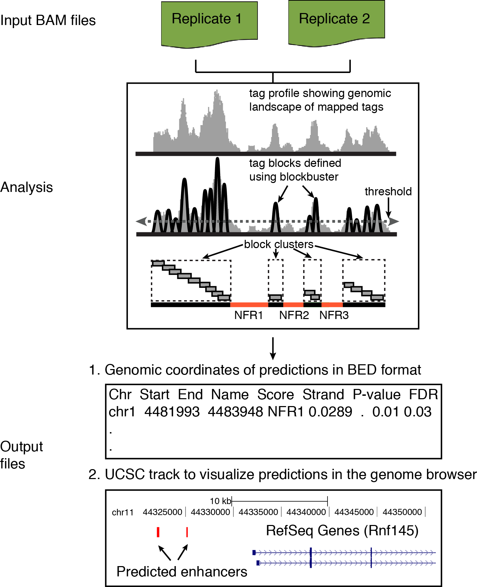
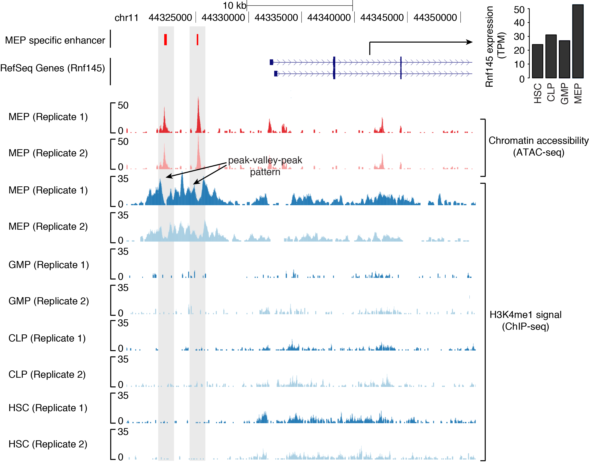

What is PARE?
PARE is a computational method to Predict Active Regulatory Elements, specifically enhancers and promoters.
Why use PARE?
For predicting enhancers and promoters, PARE offers following advantages over available methods:
- PARE uses only single histone mark (H3K4me1 or H3K4me3) for its predictions. Therefore, it can be used for cell types where limited ChIP-seq data is available. This may be due to low amount of sample or high cost.
- It predicts enhancers and promoters with high specificity for their activity. This is because PARE uses robust indicator of activity in the form of PVP pattern for its predictions.
- Due to above two advantages, PARE is very efficient to study dynamics in the activity of enhancers or promoters across different cell types or time points for which only H3K4me1/me3 data is available.
- PARE also includes a model to predict directionality of stable transcription at promoters. This is done using the same H3K4me1 and H3K4me3 data that was used for the prediction of enhancers and promoters, respectively.
How it works?
PARE exploits two important properties of active enhancer and promoter regions, which are:- They are nucleosome depleted, therefore called as Nucleosome Free Regions (NFRs); and,
- The nucleosome flanking these regions are enriched for distinct histone modifications, which in case of enhancers is H3K4me1 and in case of promoters is H3K4me3.
As a consequence of the above two properties, H3K4me1 and H3K4me3 signal is distinctly arranged in the form of a peak-valley-peak (PVP) pattern at enhancers and promoters, respectively. PARE, in essence, captures this PVP-pattern, and predicts:
- Genomic regions enriched for H3K4me1 PVP pattern as active enhancers.
- Genomic regions enriched for H3K4me3 PVP pattern as active promoters.
Flow diagram
A general overview of various analysis steps involved in PARE.

Input
As input, the method requires two BAM files corresponding to two replicates of H3K4me1 (enhancer prediction) or H3K4me3 (promoter prediction) ChIP-seq experiment.
PARE can be executed simply by issuing following command
pare -i <BAM file (replicate 1)> -j <BAM file (replicate 2)> [OPTIONS]
Output
The results from the PARESuite are presented in two text files:
a) RESULTS.TXT: main result file in BED format. Each line represents the genomic coordinate of
an active enhancer or promoter.
For easy access, the html version of this file (RESULTS.HTML) is also available within the output directory
b) RESULTS.UCSC: file to view the enhancer and promoter regions in UCSC browser.
Program: pare (Predict Active Regulatory Elements using histone marks)
Author: BRIC, University of Copenhagen, Denmark
Version: 0.06
Contact: pundhir@binf.ku.dk
Usage: pare -i <file(s)> [OPTIONS]
Options:
-i <file> [mapped reads in BAM format (replicate 1)]
[if multiple, please separate them by a comma]
[OPTIONS]
-k <file> [optimal histone peaks region in BED format]
[-k will get precendence over -c parameter]
-c <file> [mapped reads in BAM format (control)]
-o <dir> [output directory to store results (default: results)
-m <string> [genome (default: mm9)]
-p [run in parallel]
-n <int> [minimum length of nucleosome free region (default: 20)]
-v <int> [maximum length of nucleosome free region (default: 1000)]
-t <float> [FDR at which to consider a NFR as significant (default: 0.05)]
-h [help]
Example
An usage example of PARESuite is shown below. As input, the method requires mapped reads in BAM format. An example dataset and expected results are available at http://servers.binf.ku.dk/pare/download/test_run/
pare -i data/h3k4me1_helas3_Rep1.bam,data/h3k4me1_helas3_Rep2.bam -k \
data/optimal.h3k4me1_helas3_Rep0_Vs_control_helas3_Rep0.regionPeak.gz -o results \
-m hg19 -p &> pare.log
UCSC browser view of erythorid lineage (MEP) specific enhancers (in red color) identified through H3K4me1 PVP-pattern. Also shown is upregulation in the expression of gene, Rnf145 proximal to these enhancers in erythroid lineage (HSC: Hematopoietic Stem Cells; GMP: Granulocyte-Macrophage Progenitor; CLP: Common Lymphoid Progenitor; MEP: Megakaryocyte-Erythroid Progenitor).

More info
For information on how to install PARE and its dependencies, please refer to https://github.com/spundhir/pare
License
PARE: a computational method to Predict Active Regulatory Elements using histone marks
Copyright (C) 2015 Sachin Pundhir (pundhir@binf.ku.dk)
This program is free software: you can redistribute it and/or modify
it under the terms of the GNU General Public License as published by
the Free Software Foundation, either version 3 of the License, or
(at your option) any later version.
This program is distributed in the hope that it will be useful,
but WITHOUT ANY WARRANTY; without even the implied warranty of
MERCHANTABILITY or FITNESS FOR A PARTICULAR PURPOSE. See the
GNU General Public License for more details.
You should have received a copy of the GNU General Public License
along with this program. If not, see <http://www.gnu.org/licenses/>.